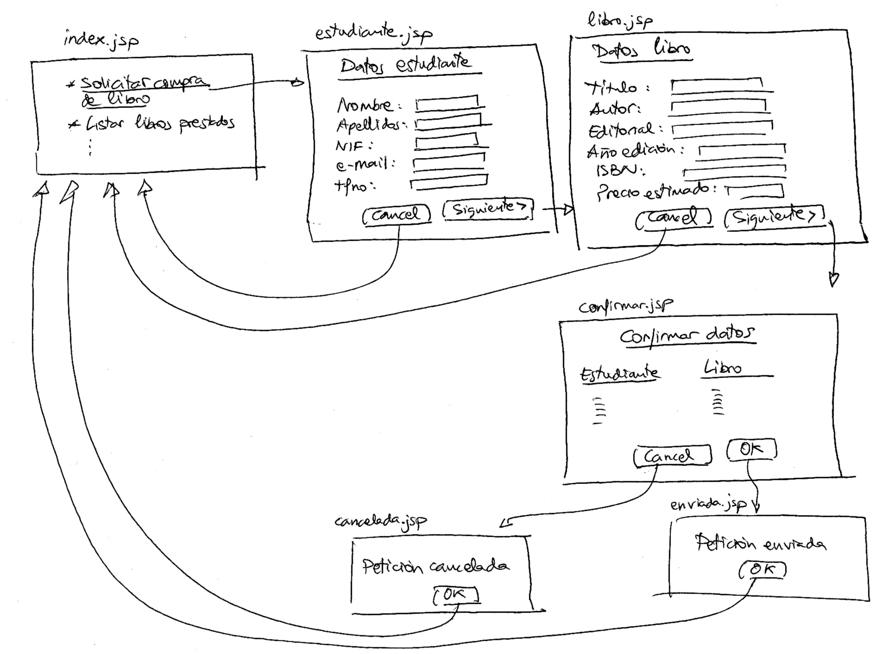

Ejercicios sesión 1 - Introducción a JSF
Instalación de una aplicación JSF mínima
Descárgate los ejemplos de la sesión 1 de ejercicios y descomprímelos. Se creará un directorio "ejercicios01-jsf" con la siguiente estructura:
- ejemplos/
- ejercicios/
En el directorio ejemplos/ se encuentran los proyectos Eclipse que hemos visto como ejemplos en esta primera sesión:
- jsf-hola-mundo
- jsf-adios-mundo
- jsf-guess-number
- jsf-login
En el directorio ejercicios/ se encuentra el proyecto Eclipse que vas a usar de plantilla para el ejercicio de esta sesión:
- jsf-sesion1
Este proyecto se trata de una copia del ejemplo "Hola mundo". Es una aplicación mínima JSF ya funcionando y preparada para añadirle funcionalidades.
Debes importar este proyecto en Eclipse. Aségurate antes de que tienes bien configurado el servidor Tomcat. Cuando lo hayas importado tendrás la siguiente estructura de directorios:
Despliega la aplicación en el servidor Tomcat y pruébala.
Aplicación Petición de libro
Vamos a usar JSF para implementar una pequeña aplicación con la que realizar una solicitud de un libro a una biblioteca. La aplicación solicitará primero los datos del estudiante, después los datos del libros y después mostrará un resumen de los datos introducidos para confirmar la petición. El siguiente dibujo muestra un diagrama con la navegación entre las distintas páginas JSP:

La aplicación comienza por una página index.jsp en la que se muestra una lista de acciones a realizar por el usuario de la biblioteca. Todas son inexistentes menos "Solicitar compra de libro" que es la que lleva a la aplicación propiamente dicha. La aplicación se basa en cinco páginas JSP:
- estudiante.jsp
- libro.jsp
- confirmar.jsp
- cancelada.jsp
- enviada.jsp
En la página estudiante.jsp se solicitan los datos del estudiante que realiza la petición:
- Nombre
- Apellidos
- NIF
- Tfno
En la página libro.jsp se solicitan los datos del libro:
- Título
- Autor
- Editorial
- Año edición
- ISBN
- Precio estimado
En ambas páginas se ofrecen las opciones "Cancel" y "Siguiente >" que llevan a la página inicial o a la siguiente página (ver dibujo). La página confirmar.jsp muestra un resumen con los datos introducidos y permite confirmar o cancelar la petición.
Debes realizar también la implementación del bean o beans de respaldo de las páginas JSP.
Validación (*)
Introduce algún elemento de validación en alguna de las páginas y muestra el mensaje de error asociado.
Modificación de la navegación (*)
En la página confirmar.jsp añade un enlace junto a "Estudiante" y otro junto a "Libro" que permita modificar cada uno de estos datos, llevando a la página estudiante.jsp y libro.jsp. Modifica el funcionamiento del botón "Siguiente >" de la página estudiante.jsp, de forma que si los datos del libro ya están introducidos vaya a la página confirmar.jsp.